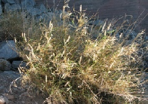
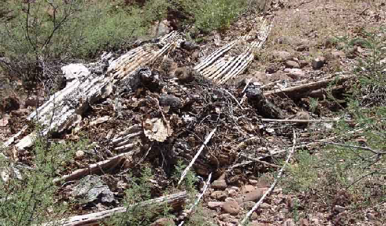
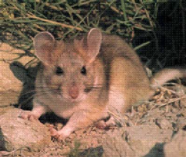
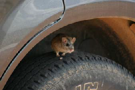
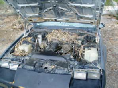
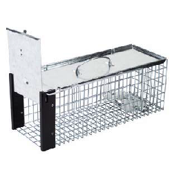
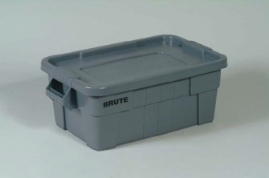
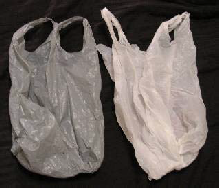
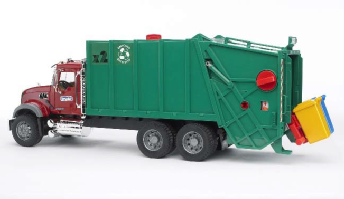

ISSUES
Many issues confront homeowners in urban Tucson. OFNA strives to keep residents informed of the issues as they arise, and to assist neighbors in dealing with those issues. Crime is also a major issue and is addressed on its own page.
On this page:
Graffiti vandals have occasionally been very active in and around the neighborhood. A few years ago, over a period of about 8 weeks, signs, walls, streets and the neighborhood monument were tagged with vicious, destructive, hate-filled and profane scrawls. Neighbors and Pima County DOT were instrumental in immediately cleaning the surfaces. Pima County Supervisor Ann Day’s office and the Pima County Sheriff’s Department were very helpful in bringing the onslaught to a halt.
Graffiti has extremely negative consequences for communities, including increased crime, vandalism, loss of property values, loss of pride and loss of respect for authority. If you see graffiti anywhere in the neighborhood or outside the incorporated areas of Pima County, please report it to:
The Pima County Regional Flood Control District has been remapping the FEMA 100-year flood plains of the Friendly Village Wash, which is the main wash running through our neighborhood. This effort is now complete and the revised maps have been approved by FEMA.
The maps now more closely resemble the reality of where water actually flows. A result of the remapping is that a number of homes in Oracle Foothills have been moved out of the flood plain, and will no longer be required by their mortgage company to carry flood insurance.
FEMA has now issued a Letter of Map Revision (LOMR). If you have previously been in the flood plain and were required to buy flood insurance, you will need a copy of the LOMR for your mortgage company, who will then issue a letter which can be taken to the insurance company. You may be eligible for up to a one-year refund of flood insurance.
If you presently pay for flood insurance, contact your mortgage or insurance company and give them this case number: 08-09-0473P. They will use this to determine whether you have been removed from the flood plain.
Or you many contact Jay DeAngeli and I will send you a copy of the LOMR.
Maintenance of the main streets in Oracle Foothills Estates is the responsibility of the Pima County Transportation Department. There are also several private streets and drives that must be maintained by the property owners on those streets. These include Yvon west of Genematas, Lady Lane, and the private streets off of Canyon View, 1st Ave., Genematas, Agave and Yvon.
As of the first week of October, 2012, all the public roads in Oracle Foothills are being repaved! This is a major accomplishment for the Neighborhood Association and for everyone who helped make it happen.
To contact PC DOT:
520-724-6410
Community Relations Inquiry Form
to contact the Community Relations Division.
201 N. Stone Ave., 4th Floor
Tucson, Arizona 85701-1207
Phone: 520-724-6410
All signs on public streets are also the responsibility of PCDOT. For all sign issues other than graffiti, contact PCDOT at the number above. For Graffiti issues, contact 520-792-8224

Oracle Foothills Estates has no CCR's (deed restrictions) in effect (see History of CCR’s). Zoning ordinances are the governing restrictions.
Our zoning is CR-1. One single family residence is allowed on each lot. A lot must be a minimum of 36000 square feet if on the municipal sewer system, or one full acre if on septic system.
For detailed information on what is or is not allowed in our zoning, go to Pima County Code then click on Title 18 - Zoning.
If you feel that a neighbor is violating zoning ordinances, your remedy is to file a zoning complaint.
To file a complaint:
- Online
- Telephone 724-6740, ask for a complaint form
- In Person: Public Works Building, 201 N. Stone, 1st Floor, Zoning Enforcement Division
Dogs are wonderful companions and are a very important part of the lives and families of many Oracle Foothills residents. Unfortunately, dogs can also be a source of annoyance and irritation to other residents, a result of uncontrolled barking, leaving waste in the street and running loose.
If you are a dog owner, please also be a responsible and caring neighbor by ensuring that your dog is not barking for extended periods, by picking up your dog's waste in public areas or other people's property, and by not allowing your dog to roam free. For your pet's safety, be sure to put a name tag on it's collar, or have a microchip inserted.
If you are upset by the barking of a neighborhood dog, please make the effort to determine where the dog lives. You should then attempt to contact the owner directly, either in person or in writing. If the results of these efforts are unsatisfactory, report the situation to Animal Control, (520)243-5900.
OFNA has made it easy to pick up after your dog while walking the neighborhood by installing Mutt Mitt dispensers at several locations.
Cats
For your cat's safety and the consideration of your neighbors, keep your cat confined to your house. Cats are favorite targets of several predators that are common in the foothills - bobcats, coyotes, owls and hawks. Cats, themselves, are natural predators and domestic cats have a devastating effect on birds and other small wildlife. Help preserve the wildlife by keeping your cat indoors.
Your neighbors will also appreciate your cat being kept at home since no one likes having a domestic cat using their yards and gardens as a bathroom.

Riding All Terrain Vehicles in the washes is illegal.
Please report any such activity to the Pima County Sheriff - 911
All of the washes in Oracle Foothills are private property. Most property owners do not object to walkers or bicycle riders.
There remain a number of properties in Oracle Foothills that are large enough to subdivide. As these properties are sold by longtime owners, they become a target for real estate speculators who have no stake or interest in the neighborhood and their impact upon it.
An example of a new wildcat subdivision in Oracle Foothills took place on Lady Lane, a private cul-de-sac that runs west off of N. Genematas. A longtime property owner sold off one piece of her large property to individual home builders. Then, without informing any of the surrounding owners, she sold the remaining large property to developers who split the parcel into 6 pieces. The property containing the original house was sold, and the developers then planned to build 5 houses on the remaining lots.
Because of the topography, the lots were drawn with narrow 'suspenders' connecting the cul-de-sac to the bulk of the property on the steep hillsides and in the wash. Houses would have to be the legal minimum of 10' apart and be two stories to fit on the odd-shaped lots. Additionally, the developers sent in bulldozers and began creating a road and septic perc tests across private property on Williams Drive.
Neighbors on all sides and OFNA raised a hue and cry to the developers and to Pima County. The county forced the developers to eliminate one parcel or be required to follow all rules for subdivisions, such as curbs and gutters.
Homes on the remaining 4 vacant parcels would still be extremely crowded and out of place in our neighborhood. With the downturn in the real estate market, the developers are not moving forward at this time, but unfortunately it's only a temporary reprieve.
Examples of wildcat subdivisions exist all over Oracle Foothills. Small private streets that run off of the main streets, and carry the same name as the main street, can be found on Agave, Yvon and Canyon View. Pima County is not responsible for the maintenance of the private roads. Questions of the ownership of the roadway and access issues can also arise.
Take the time to familiarize yourself with surrounding properties and the potential for development. A good place to start is the excellent Pima County Maps site.
Oracle Foothills Neighborhood abuts City of Tucson property on our southern and western borders. From time to time, the city expresses interest in annexing unincorporated areas of the county in order to increase revenue, both from the taxpayers included in the base and from tax proportions from the State.
In order to annex a specific area, state law requires that 51% of property owners and those holding 51% of property values are in agreement with annexation.
Currently, we are served by Pima County Sheriff for police services, Northwest Fire for fire and EMT services and by the garbage company of our choice. Water and sewer services would remain the same under city control, but Tucson Police Department and Tucson Fire Department would provide emergency services, and the city would become the only waste hauler available.
In the fall of 1996 a two-unit modular house was moved onto a property on the corner of 1st Ave. and Agave Dr., right at the entrance to our neighborhood. Neighbors objecting to the placement of this unit in our neighborhood soon learned that it was legal under current zoning laws.
Although some residents worked diligently and successfully to change the zoning code, the already-installed house was allowed to stay. It didn't take long for our worst fears to be realized. The house and property became an instant slum and a terrible blight on the neighborhood. Oracle Foothills lived unhappily with this situation for eight long years, writing letters, filing complaints, holding meetings and generally grumbling loudly.
Finally, in 2004, in a combination of county pressure and financial stress, the house and property were sold to a neighbor who subsequently removed the modular and built a quality house. This experience has understandably made Oracle Foothills residents negative about off-site-built construction in our subdivision.
Pima County is now pressing once again to make manufactured housing legal in wide range of zones in areas of site-built homes. A committee was formed in Spring of 2007 to study the issue and make recommendations to the Board of Supervisors. Prior to the first meeting of the committee, the charter was amended to include affordable housing recommendations for Pima County. The resulting Manufactured and Affordable Housing Strategy Committee (MAHSC) was made up of stakeholders from each Supervisor district, affordable housing non-profits, neighborhoods, manufactured housing industry, and rental housing representatives. Supervisor Ann Day's representative on the committee was Oracle Foothills resident Carole DeAngeli.
The MAHSC wrapped up its work in the early 2008, presenting proposals for zoning code text amendments on manufactured housing as well as recommended strategies for increasing affordable housing in Pima County. There was no consideration by this committee to allow manufactured housing in CR-1 zoning, which includes Oracle Foothills Estates.
The completed MAHSC report was forwarded to Planning and Zoning, which was to provide input and send it along to the Board of Supervisors. As of mid-2010, the report appears to have been shelved for lack of interest.
Final recommendations of the committee were that Manufactured Housing be allowed in three specific areas of Pima County (designated “growth” areas) which are currently zoned CR-3, CR-4 or CR-5. The three areas are:
- The Southwest Infrastructure Plan
- The Airport Growth Area
- The Flowing Wells Growth Area
There are numerous design guidelines and requirements which must be met, and for which inspectors will check. These include elements which will make the manufactured house blend into the surrounding neighborhood, and not stand out as a”trailer”.
Buffelgrass is a non-native grass originally introduced for cattle forage and later for erosion control. "In Southern Arizona, rapid spread of buffelgrass and conversion of fire-resistant desert to flammable grassland rivals urban growth and water as the region's most pressing environmental issue.
Buffelgrass has introduced a new wildfire risk into an ecosystem that is not fire adapted. It grows in dense stands, crowds out native plants, and negatively impacts native wildlife species and their habitat.
Buffelgrass is considered a particularly serious threat to the saguaro cactus, the iconic plant of the Sonoran Desert Ecoregion, and is extremely detrimental to desert tortoise and mule deer habitat. Desert wildfires worsen the buffelgrass invasion because buffelgrass is able to quickly respond to fires, filling in the newly disturbed areas with seedlings. "

To learn more about buffelgrass and what you can do, go to Buffelgrass Information Center


The narrow, curvaceous streets of Oracle Foothills with no shoulder and a lining of vegetation do not lend themselves to speeding automobiles. Sight lines are very limited. People, pets and wildlife all must share the streets with vehicles. The speed limit on our streets is 25 MPH but conditions often call for slower speeds. Please drive slowly and watch for walkers, bikers and crossing animals. Please ask visitors and teenage drivers to do the same.
As a result of drivers speeding in the neighborhood, some neighbors have asked if we could install speed humps. For every person who wants speed humps, there are several who are vehemently opposed to them.
Pima County has a procedure for installing speed humps:
Residents are required to form a neighborhood advisory committee, schedule meetings, hold petition drives, and pay for the speed humps. At least 60% of property owners in the affected area must sign petitions. A speed hump costs $500 to $1000 to construct. Neighborhoods are not allowed to have just one speed hump. They only work in a series. The OFNA Board of Directors is not in favor of installing speed humps. If you want to read more about traffic calming devices for Pima County, go to this link.
One of the great joys of living in our little neighborhood is the opportunity to see wildlife virtually every day. From birds to reptiles, mammals to butterflies, the diversity is amazing. The original concept of the development was to live in harmony with the natural desert environment, retaining native vegetation and encouraging the presence of wildlife.
Naturally, conflicts can arise between human habitants and the animals who also call the desert home. People with small children or pets do not want rattlesnakes in the enclosed yard, javelinas and rabbits can be destructive to landscape vegetation, scorpions can make their way into homes.
To enhance your enjoyment of our wildlife neighbors, education is the first step. Learn how to identify our local species and their behaviors. Learn which venomous reptiles are medically significant and which have an unearned bad reputation. Discover the role that each species plays in the scheme of life in the desert. Learn to plant vegetation which will attract the wildlife you want to encourage, and to avoid that which will be immediately consumed by a hungry javelina.
A good source of information is the Arizona Game and Fish website:
Please remember that it is illegal to feed any wildlife except birds. Help keep wildlife wild.
DO NOT FEED!
Snakes are especially active during the warm months of the year.
Non-venomous snakes in this area include GOPHER (sometimes called Bull), KING, COACHWHIP and smaller snakes like VARIABLE SAND SNAKES. These reptiles present no threat whatsoever to humans.
The only snake you need to be concerned about is our venomous WESTERN DIAMONDBACK RATTLESNAKE (in photo), whose bite is medically very dangerous. Avoidance is your best policy. Rattlesnakes have no desire to bite you and would much prefer to quietly go their way, saving their venom for their food supply. Rattlesnakes are pit vipers, with a large, triangular-shaped head, black and white bands near the end of the tail, and a set of rattles at the very end.
Should you or your pet be a victim of a rattlesnake bite, get medical attention immediately! Do not hesitate, do not apply a tourniquet or try to suck out the venom.
Snakes are a very important component in the desert community, helping to keep the rodent population under control. A snake in your yard is most likely just passing through and will leave the area of its own accord. Stay aware at all times when outdoors, and as the herpetologists say, never put your hands, your feet or your butt somewhere you have not first looked!
NWFD Snake Removal Policy
If you call Northwest Fire Department for snake removal, please be aware that their policy has changed.
Dispatchers will ask a series of questions and if emergency criteria are not met, they will not dispatch a fire unit. The criteria for dispatch are:
- In the house or garage
- At a bus stop or playground
- In an enclosed yard with no obvious means of egress
Callers are also encouraged to be tolerant of a snake that is not venomous by their description (black snake with white or yellow rings or black with no markings, for example). If the caller is persistent, they will dispatch a unit and the educational component is handled by the responding crew. The crew will still carry a box for the snake but it will be used sparingly. Typically, the snake is placed outside the wall or in a nearby desert area and the crew will help the caller identify entry areas.
A crew will NOT respond for a snake in the road, a snake in your neighbor's yard or driveway, or a snake that has been run over!
Please remember that if you do not want snakes in an area where your children or pets play, it is your responsibility to make the area snake-proof. This is not a difficult task and can be accomplished with a roll of hardware cloth. Make sure the openings in the wire are too small to allow even a young snake to transgress. Snakes will use openings created by ground squirrels and other digging animals.
The desert and washes of Oracle Foothills are being despoiled by lazy and unscrupulous ‘landscapers’ and homeowners who want to avoid the long drive and fees required to properly dispose of plant material or other refuse at the County dump. It is illegal and immoral to dump refuse along our roadways and in our washes. If you see someone dumping in this manner, please record a license plate number and description of the vehicle and call 911. You can report illegal dumps to 520-725-7400, 520-622-5800 (24 hours) or online.
Don’t be a second-hand dumper! If you hire someone to clean up your property, it is your responsibility to ensure that the waste is disposed of properly. Withhold at least partial payment until a dump receipt is produced.
Home Occupations
Zoning Code Text Amendment
The zoning code in Pima County allows for residents to conduct business out of their home in residential zones, subject to certain restrictions.
Currently, the zoning code (18.09.030) allows for home occupations in residential zones with the following limitations (this is not a complete list):
- A home occupation permit must be obtained from the chief zoning inspector
- Must be a full-time occupant of the dwelling
- Not more than one non-resident employee
- In the main dwelling - not more than 1/4 of the floor area of one story or
- In an accessory building - not more than 200 sf
- No overnight accommodations
- No more than 5 clients per day, no more than 2 clients at one time
- No sustained odors or noises, noxious fumes, or traffic congestion
Certain types of businesses are not permitted, such as auto repair, tattoo parlor, welding service, veterinarian service.
SOME TIPS FOR TARGETING DESERT PACKRATS
WITHOUT HARMING OTHER SPECIES
Mary C. Stiner (July 2015)
One of the joys of living in the Oracle Foothills (OF) neighborhood is the richness of wildlife and vegetation. And course there are all the great neighbors too!
We (Steve Kuhn and I) have lived in OF for more than 20 years and over this time have learned a lot about enjoying and co‐existing with native species. Nearly all of us have struggled, however, with packrats (the desert packrat or woodrat), which may severely damage our homes, yards, and motor vehicles. Packrats can even impact our health because their nests are havens for kissing bugs, ticks and fleas. Property damage from packrats can be very costly, and so naturally many of us have felt the desperate need to get rid of them. A wide variety of methods are discussed on the web and elsewhere, but many of these are ineffective, and others do tremendous damage to other kinds of animals. In this short essay, I share my experiences in controlling packrats effectively and without harming other species in our environment. Like many people who might read this essay, my time for these kinds of activities is limited, and so I have stream‐lined my methods over the years to those that (a) really work and (b) are do‐able over the long term. I hope that the information will be helpful to others—it has worked very well for me.
Some background packrat ecology and behavior
Packrats rely heavily on prickly pear cactus for food, along with seeds, leaves and fruits of other plants. The main predators of packrats in our area are coyotes, snakes, large owls, foxes and ground‐hunting hawks. I have watched coyotes raid packrat nests with great skill and, as a large predators, they can put away quite a few rats per month. Raptors (predatory birds) and snakes also do their part.

A nice big packrat nest.
The rats are good climbers, and they are active mainly at night. They are also very industrious in their search for and construction of nesting sites. Each nest has a thick protective “shell” of sticks and spines and a soft core of finely shredded plant fibers. Normally there is one rat per nest, though some rats may move among multiple nests. This means that removing one nest on your property is the equivalent of displacing approximately one rat, or one rat and her infants. In our area, packrats will reproduce in spring and may have another litter later in the year. The OF neighborhood has a high density of packrats relative to many other areas around Tucson.
 

Desert packrats and some of their favorite nesting sites.
Packrat removal
Because packrats are abundant in the Tucson area and not classified as a protected species, homeowners are free to remove them if they become pests. Be aware that packrats are clever and curious. They navigate by scent trails, and they have powerful homing skills.
One potential impediment to controlling them is the fact that they are rather cute and fuzzy. This becomes a problem when the neophyte trapper first peers into their sprung Have‐A‐Heart trap. What to do with the little prisoner? Well, my husband and I used to be among the ranks of folks who drove each live‐trapped rat several miles away and then set them free. It is nice to think that this is the kindest approach, but actually re‐location just passes the problem on to someone else and/or exposes to animal to horrific stresses, from which it often dies. In desperation the displaced animal may travel miles in order to return to the place where you trapped it, rather than die from exposure or conflict in the new place. So I have reached the conclusion that re‐locating rats is a feel‐good measure for people but not a kindness to the rats. Most biologists seem to agree.
On the other hand, I do understand that not everyone can stomach killing them. But for those of you who have reached the point of willingness to “do‐in” ratty pests, here is a method that will take care of the rats but not hurt other wildlife. In a word, we drown our live‐trapped rats in water and give the bodies to the garbage man.
Materials: One or more live traps; I strongly recommend a Have‐a‐Heart traps with a vertical sliding door (shown below), which is very efficient and lasts a long time (mine are 15 years old and still work great). Other animals rarely enter them, whereas rats find them almost irresistible. You will also need one sturdy watertight container with a tight‐fitting snap‐on lid (very cheap at local hardware stores). I like a container that is large enough to accommodate two live traps. Make sure that the container is deep enough to fully submerge each trap. Place the plastic container on a level surface in a shady area and fill it with water. The water will stay reasonably clean for quite some time if you keep the lid on. For bait, fruit slices work very well and don’t foul the trap (other people swear by peanut butter). That’s it!
 
My packrat trapping kit—long‐lasting and very affordable.
Method: Place the bait toward the inside end of the trip pedal, so the rat must fully enter the trap and disturb the trigger. Place traps where you see fresh droppings, in runways leading to a nest, near walls, or where you have seen a rat moving about recently. Importantly, it is best set traps on the evening, and preferably on the night before garbage day (!).
Check your trap(s) in the early morning. Transport full traps to your water tank. Do not spend time looking at the rats or talking to them. Remove lid of the container and drop the traps into the water, making sure that they are fully submerged. Leave the area for about 15 minutes.
Return to the water bin and remove the trap by its handle. Open the trap door and drop the drowned rat into a plastic bag. Dispose of immediately. Doing this on garbage day eliminates the problem of a very smelly trash can.

The second part of the process.
A good routine is to do this once a month even if you haven’t spotted a problem, or more frequently if you do see rats. This strategy continuously reduces the density of packrats around your home and suppresses nest building. Your problems will only get worse as nests become more common around your home.
There are other kinds of traps on the market that also allow you kill packrats. I have used snap traps in the past, but these traps attract and kill other mammals and birds indiscriminately, so I stopped using them. Sticky traps may be ok but they are not re‐usable and seem to guarantee a slow and miserable death. The nice thing about Have‐a‐Heart traps is that you can release non‐targeted animals.
What to do about rat nests?
It may be a fool’s errand to try to remove all packrat nests from a large property, especially without also
undertaking a total change of the vegetation. It is very worthwhile, however, to remove nests near yourhouse or other buildings on your property, as these just attract new rats and concentrate kissing bugs, ticks, and other biting invertebrates.
Removing nests is no one’s idea of a good time, but it is not as horrible a job as it first appears. Of courseone option is to pay for their removal, and this may be well worth the money for some neighbors. Because this kind of service can be expensive over the long‐term, you may decide to remove the nest yourself. To do this, you need some sturdy garden tools, namely a shovel and a rake or hoe, and a bin or
wheelbarrow (bags tend to be awkward because of all the thorns) to collect the material from the dismantled nest. Wear gloves and avoid handling the material directly because it will be full of sharp thorns and spines. Be sure to completely remove the nest, including the interior bedding area. Then rake the ground as a final cleaning of the area. If you are concerned about insects dispersing from the nest, you can finish by spraying the area with an insecticidal soap or thuricide bacteria mix (this is what the professionals so). Both sprays are very effective and ecologically friendly (I use them in my greenhouse and they really work).
Long term control strategies
Many neighbors in OF have gradually changed some of the vegetation on their property as a way to discourage packrats. In fact, some of the plants on OF properties that are most attractive to packrats either are not native to our area (most agaves and prickly pear species) or they presently exist at much higher densities than is natural (this is especially so for the native prickly pear). Their dominance in local vegetation may be due to earlier landscaping choices, overgrazing in the deeper past, and other factors. The rats love to nest under prickly pear and untrimmed agaves, and these plants are also important sources of food and moisture for them. Major sections of our property, for example, were choked with prickly pear and monster agaves when we moved here, and we suffered major packrat problems for several years, until we undertook a combination of regular trapping and a gradual removal of inappropriate plants. We leave some native prickly pear on our property as food for other wild animals, but we have taken most of these out. The barren ground left behind is quickly recolonized by much
more attractive and manageable native shrubs that are also good for wildlife. What a difference these measures have made with respect to packrat control! We still have rats around the property, but now trapping is more than enough to keep them at bay.
Other important and possibly more obvious things one should do include sealing openings in buildings (pipes, vents, etc.) to keep the rats from invading. Also, because rats are disturbed by light as they move about at night, many neighbors use lights to discourage rats from entering under the hood of their motor vehicles. If you have a secluded spot near your house that seems to attract rats again and again, try installing a small solar light there. This has been very helpful in our case, such as behind a dense palm tree in a corner. Other methods of repelling rats such as odorous chemicals or electric sound generators do not work well, if at all, and are a great way to waste your money.
Why not just use poison?
Most or all poisons do collateral damage to wildlife. Following the directions on the package does not amount to safe practices, because the animals and plants around us are bound into a complex, highly inter‐connected food chain. And then there are the hazards to pets and children to consider. Hardware and other supply stores regale us with a whole spectrum of poisons to use, but there is no truly safe way to use them if the chemicals persist in the environment (and most of them do). Rats that are poisoned with anti‐coagulants, for example, may take 4‐5 days to die a miserable death, and all the while they are available to hunting predators, and to scavengers thereafter. Cached baiting (leaving multiple baits for future rats) raises the likelihood of down‐the‐line poisoning of other animals even higher. There really are better alternatives to poisoning rats and other pests.
Redevelopment of the Catalina Foothills Center
Catalina Foothills Center
(The Lodge)
The owners are in the early stages of planning for the redevelopment of this large property which fronts on Oracle, but which abuts Oracle Foothills properties. The first requirement in the planning process is to modify the PC Comprehensive Plan. That amendment has now been approved.
Here are links to the documents that were presented:
Request for Comprehensive Plan Amendment
Catalina Foothills Lodge Exhibits
PC Development Services Staff Report
The Planning and Zoning Commission voted to APPROVE the change from MIU to NAC for Zone 1. For Zone 2, the Commission voted to recommend that LIU 3.0 be allowed for Zone 2, and not the higher density MIU. Many OFNA neighbors spoke and wrote in opposition to the change to MIU. Subsequent to that meeting, the applicant withdrew the request for MIU for Zone 2, lowering the request to LIU 3.0.
The OFNA Board accepted land use category LIU 3.0 with the condition that the RAC (Residences Per Acre) be limited to 2.75. The board did not agree to specifying one entry/exit on Genematas Dr., nor to did they agree to accepting TR (Transitional) zoning for an assisted living facility in Zone 2 of the plan.
At their meeting on December 2, 2014, the Supervisors voted 5-0 to accept all our recommendations. Therefore, the owners of the property will be granted an amendment to the Pima County Comprehensive Plan as follows:
NAC (Neighborhood Activity Center) for Zone 1
LIU 3.0 (capped at 2.75 RAC) for Zone 2
RT (Resource Transition) for Zone 3
Here is the article from the AZ Daily Star
The OFNA Board feels that this is a significant accomplishment for our neighborhood. Essentially, this reduces the potential housing density from 10 per acre to 2.75 on the land most closely abutting Oracle Foothills.
The next step is rezoning. At this stage, the developer must provide a detailed plan of what they propose to build, including number and types of residences, building height, commercial buildings, streets, elevations, traffic volumes, buffers, landscaping, etc.
UPDATE: The lodge property has been purchased by Stewart Properties. Jason Stewart and his brother, David, have been in communication with OFNA. They plan to upgrade the existing lodge structures, preserving their historic value. There are two large parcels of vacant land, one on lower Genematas Dr. And one on W. Yvon Drive. These properties are being sold to Sterling Homes to develop. On these properties they plan to build single family residences, each on one full acre. No zoning change is required for this development. On the lower parcel, seven (7) residences are planned, with an entrance in the 5200 block of N. Genematas. On the upper parcel, off of W. Yvon Dr., eleven (11) homes are planned. There is an issue with access to the Yvon properties. The developers prefer to exit onto W. Yvon to Genematas Dr. In order to do this, they must secure easements from the current Oracle Foothills residents who live along W. Yvon Dr, as it is privately owned. The other alternative is to create a roadway that bypasses the road closure gate, and goes out through Yvon Drive to Oracle Rd. The developers are in discussion with the W. Yvon property owners.
Map of the Sterling Homes Genematas Site
Proposed layout of the Genematas Development
Dark Skies
What you need to Know about Night Lighting
Astronomy is big business in Southern Arizona. Several thousand jobs and hundreds of millions of dollars in business depend directly and indirectly on astronomy. To help protect the industry and the prevent the negative effects of night lighting, Pima County adopted a Dark Skies Initiative ordinance in 1972 and updated it in 2012. Tucson and Pima County take pride in their commitment to contain light pollution. But now we’re losing the battle to night lighting. The stars in the night sky are increasingly difficult to see from the urbanized area. In addition to the negative effects on astronomy, night lighting can also affect wildlife, waste energy and impact human health. Not to mention that bright night lights can annoy your neighbors.
Dark skies are the law in Pima County. The purpose and intent of the code:
The purpose of this code is to preserve the relationship of the residents of the City of Tucson, Arizona and Pima County, Arizona to their unique desert environment through protection of access to the dark night sky. Intended outcomes include continuing support of astronomical activity and minimizing wasted energy, while not compromising the safety, security, and well being of persons engaged in outdoor night time activities. It is the intent of this code to control the obtrusive aspects of excessive and careless outdoor lighting usage while preserving, protecting, and enhancing the lawful nighttime use and enjoyment of any and all property. It is recognized that developed portions of properties may be required to be unlit, covered, or have reduced lighting levels in order to allow enough lumens in the lighted areas to achieve light levels in accordance with nationally recognized recommended practices.
To briefly summarize the law, homeowners should have no more than five night lights around the house. You can read the ordinance here.
To read more about dark skies, and what you can do to help, go the International Dark-Sky Association website.